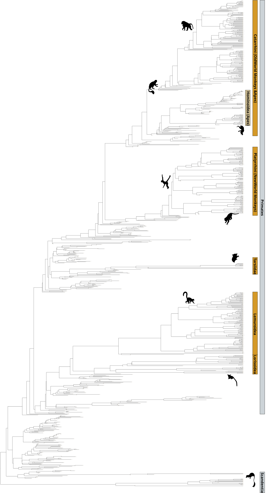

Phylogeny
100%


Still in progress. Check back later for updates.
Software & data
Maps: Adapted from Scotese, C.R., and Wright, N., 2018. PALEOMAP Paleodigital Elevation Models (PaleoDEMS) for the Phanerozoic PALEOMAP Project, https://www.earthbyte.org/paleodem-resourcescotese-and-wright-2018/
Phylogeny: Adapted from the metatree approach that combines genetic and morphological data in a single analysis. Wisniewski, A.L., Lloyd, G.T. and Slater, G.J., 2022. Extant species fail to estimate ancestral geographical ranges at older nodes in primate phylogeny. Proceedings of the Royal Society B: Biological Sciences, 289(1975).
Plotting the phylogeny: To plot the phylogeny I used TreeViewer. See here for more details: Bianchini, G., & Sánchez-Baracaldo, P. (2024). TreeViewer: Flexible, modular software to visualise and manipulate phylogenetic trees. Ecology and Evolution, 14, e10873. https://doi.org/10.1002/ece3.10873
Taxonomic images: Sourced from https://www.phylopic.org/
Useful references
Beard, K.C. (2016) ‘Out of Asia: Anthropoid Origins and the Colonization of Africa’, Annual Review of Anthropology, 45(Volume 45, 2016), pp. 199–213. Available at: https://doi.org/10.1146/annurev-anthro-102215-100019.
Censky, E.J., Hodge, K. and Dudley, J. (1998) ‘Over-water dispersal of lizards due to hurricanes’, Nature, 395(6702), pp. 556–556. Available at: https://doi.org/10.1038/26886.
Gunnell, G.F. et al. (2018) ‘Fossil lemurs from Egypt and Kenya suggest an African origin for Madagascar’s aye-aye’, Nature Communications, 9, p. 3193. Available at: https://doi.org/10.1038/s41467-018-05648-w.
Marivaux, L. et al. (2023) ‘An eosimiid primate of South Asian affinities in the Paleogene of Western Amazonia and the origin of New World monkeys’, Proceedings of the National Academy of Sciences, 120(28), p. e2301338120. Available at: https://doi.org/10.1073/pnas.2301338120.
Montheil, L. et al. (2026) ‘Across ancient oceans: Eocene dispersal routes of Asian terrestrial mammals to Europe, Afro-Arabia and South America’, Earth-Science Reviews, 273, p. 105352. Available at: https://doi.org/10.1016/j.earscirev.2025.105352.
Oliveira, F.B. de, Molina, E.C. and Marroig, G. (2009) ‘Paleogeography of the South Atlantic: a Route for Primates and Rodents into the New World?’, in P.A. Garber et al. (eds) South American Primates: Comparative Perspectives in the Study of Behavior, Ecology, and Conservation. New York, NY: Springer, pp. 55–68. Available at: https://doi.org/10.1007/978-0-387-78705-3_3.
Silvestro, D. et al. (2019) ‘Early Arrival and Climatically-Linked Geographic Expansion of New World Monkeys from Tiny African Ancestors’, Systematic Biology, 68(1), pp. 78–92. Available at: https://doi.org/10.1093/sysbio/syy046.
Springer, M.S. et al. (2012) ‘Macroevolutionary Dynamics and Historical Biogeography of Primate Diversification Inferred from a Species Supermatrix’, PLOS ONE, 7(11), p. e49521. Available at: https://doi.org/10.1371/journal.pone.0049521.